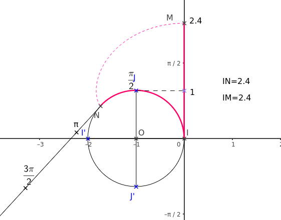

Cercle trigonométrique
Enroulement de la droite
Définition :
Soit \(\Oij\) un repère du plan.
On appelle cercle trigonométrique le cercle de rayon \(1\) unité et de centre l’origine du repère et muni d’un sens de parcours.
On appelle alors sens direct le sens contraire au sens des aiguilles d’une montre et sens indirect l’autre sens.
On considère \(\mathscr{C}\) un cercle trigonométrique de centre \(I(1;0)\) et \(d\) la tangente à \(\mathscr{C}\) en \(I\), dont un repère est \(\left(I,\ve{j} \right)\).
Cette droite est appelée axe des réels.

On enroule cette droite autour du cercle. Ainsi, à chaque point \(N\) d’abscisse \(t\) de la droite réelle \(d\) dans le repère \(\left(I ; \ve{j} \right)\) correspond un unique point \(M\) du cercle \(\mathscr{C}\).
Un tel point \(M\) est alors appelé image de \(t\) sur \(\mathscr{C}\)
- dans le sens direct si \(t > 0\).
- dans le sens indirect si \(t < 0\).
Remarque :
- L’arc \(\wideparen{IJ}\), dans le sens direct, fait un quart de cercle. La circonférence du cercle trigonométrique étant de \(2 \pi\), l’arc \(\wideparen{IJ}\) fait \(\frac{\pi}{2}\) unités. Donc \(J\) est l’image de \(\frac{\pi}{2}\).
De même, le symétrique du point \(I\) par rapport au centre du cercle est l’image de \(\pi\). - Dans le sens indirect, l’arc \(\wideparen{IJ}\) ayant une mesure de \(\frac{3 \pi}{2}\), il est l’image de \(-\frac{3\pi}{2}\).
Le symétrique de \(I\) par rapport à l’origine est alors l’image de \(- \pi\).
Théorème :
Soient \(x\) et \(y\) deux nombres réels. Alors, \(x\) et \(y\) ont la même image sur le cercle trigonométrique si et seulement s’il existe un entier relatif \(k\) tel que \(y - x = 2k \pi\).
On dit alors que \(x\) et \(y\) sont égaux modulo \(2 \pi\) et on note \(x = y \,[2\pi]\).
Démonstration :
\(x\) et \(y\) ont pour image le même point \(M\) si et seulement si, de \(t\) à \(t'\), l’enroulement de la droite réelle sur le cercle trigonométrique correspond à un nombre entier de tours.Le périmètre du cercle étant \(2\pi\), alors \(x = y + 2k\pi\), où \(k \in \Z\). (Si \(k > 0\), les tours sont dans le sens direct, sinon dans le sens indirect.)
Remarque :
- Tout point du cercle trigonométrique est l’image d’une infinité de réels. - Dans la propriété et la démonstration précédentes : \(\abs{k}\) correspond au nombre de tours.
Exemple :
1. Le point \(J\) est l’image de \(\frac{\pi}{2}\), mais aussi de \(\frac{5\pi}{2}\), \(\frac{9\pi}{2}\)… 2. \(\frac{7\pi}{11}\) et \(\frac{51\pi}{11}\) ont la même image.
En effet, \(\frac{7\pi}{11}-\frac{51\pi}{11} = -4\pi = 2 \times (-2)\pi\). 3. Tous les réels ayant la même image que \(\frac{7}{3} \pi\) sur le cercle trigonométrique sont les réels \(\frac{7}{3} \pi + 2k \pi\), \(k \in \Z\).
Mesure en radian
Définition
Définition :
On considère le cercle trigonométrique et \(M\) un point de ce cercle trigonométrique.
Tout nombre \(a\) dont l’image sur le cercle est \(M\) est appelé une mesure en radian de l’angle \(\widehat{IOM}\).
Remarque :
1. Le symbole du radian est rad.
2. Un même angle admet une infinité de mesures en radian différentes, elles sont alors toutes égales modulo \(2 \pi\).
Remarque :
En appliquant les règles d’opérations sur les angles, comme pour les degrés, pour deux points \(M (a)\) et \(N (b)\) du cercle trigonométrique, une mesure en radian de l’angle \(\widehat{MON}\) est
\[\widehat{MON} = \widehat{ION} - \widehat{IOM} = b - a \, [2\pi]\]
Cas du \(1\; rad\) :
On considère un cercle de rayon \(R\), et un arc de cercle \(AB\) de longueur \(R\). D’après la définition, l’angle au centre qui intercepte cet arc de cercle a pour mesure \(1~rad\).
La mesure du segment \([AB]\) est inférieure à \(R\), ainsi un angle dont la mesure est \(1\,rad\) est plus petit qu’un angle dont la mesure est de \(60^{\circ}\).
On montre que \(1~rad \approx 57^{\circ}17'44''\).
Définition :
La mesure principale d’un angle en radian est la mesure qui, parmi toutes les autres, se situe dans l’intervalle \(]-\pi \, ; \, \pi]\).
Exemple :
- Sur un petit angle \(\frac{-57}{7} \pi\)
Méthode 1 : pas à pas :
Afficher la correction
\(\frac{-57}{7} \pi < -\pi\) (on n’a donc pas assez de tours …)- \(\frac{-57}{7} \pi + 2\pi = \frac{-57+14}{7}\pi = \frac{-43}{7} \pi\) et \(\frac{-43}{7} \pi < -\pi\)
- \(\frac{-43}{7} \pi + 2\pi = \frac{-43+14}{7}\pi = \frac{-29}{7} \pi\) et \(\frac{-29}{7} \pi < -\pi\)
- \(\frac{-29}{7} \pi + 2\pi = \frac{-29+14}{7}\pi = \frac{-15}{7} \pi\) et \(\frac{-15}{7} \pi < -\pi\)
- \(\frac{-15}{7} \pi + 2\pi = \frac{-15+14}{7}\pi = \frac{-1}{7} \pi\) et \(- \pi < \frac{-1}{7} \pi \leqslant \pi\)
Ainsi la mesure principale de l’angle est \(\frac{-\pi}{7}\).
- Sur un angle « grand » : \(\frac{192}{7} \pi\)
Méthode 2 : On cherche le nombre de tours à rajouter ou à retirer.
Afficher la correction
Pour tout \(k \in \Z\), \[ \begin{aligned} -\pi <\frac{192}{7} \pi +2k\pi \leqslant \pi &\Longleftrightarrow -\pi - \frac{192}{7} \pi \leqslant 2k\pi \leqslant \pi - \frac{192}{7} \pi \\ &\Longleftrightarrow - \frac{199}{7} \pi \leqslant 2k\pi \leqslant - \frac{185}{7} \pi \\ &\Longleftrightarrow - \frac{199}{14} \leqslant k \leqslant - \frac{185}{14}\\ &\Longleftrightarrow -14,2 < k <-13,2 \end{aligned} \] On déduit donc que \(k=-14\).
\(\frac{192}{7} \pi - 14 \times 2 \pi = \frac{192}{7} \pi - 28 \pi = \frac{192}{7} \pi - \frac{196}{7} \pi = - \frac{4}{7} \pi\).
Cette dernière valeur est la mesure principale.
- Méthode 3 : On cherche un multiple.
Afficher la correction
On a, pour tout \(k \in \Z\), \(\frac{192}{7} \pi - 2k\pi = \frac{192\pi - 14k\pi}{7}\).
On cherche dans la table de \(14\) le multiple le plus proche de \(192\).
\(13 \times 14 = 182\) et \(14 \times 14 = 196\), le multiple le plus proche est donc \(196\).
Ainsi on prend \(k=14\).
Lien radian - degré
Théorème :
Les angles en radian et en degré sont proportionnels.
Démonstration :
Soit le cercle trigonométrique, et \(M\) image du réel \(\alpha\), alors \(\widehat{IOM}\) a pour mesure en radian \(\alpha\).Soit \(a\) la mesure en degré de cet angle, alors \[a= \frac{360 \times \alpha}{2\pi}.\]
Exemple :
- À un angle de \(60^{\circ}\) correspond un angle de \(\frac{60 \times 2 \pi}{360} = \frac{\pi}{3}~rad\).
- À un angle de \(\dfrac{11 \pi}{8}~rad\) correspond un angle de \(\dfrac{\dfrac{11 \pi}{8} \times 360}{2 \pi} = 247,5^{\circ}\).
On peut retenir le tableau de correspondance suivant :
| Mesure en radian | \(0\) | \(\dfrac{\pi}{6}\) | \(\dfrac{\pi}{4}\) | \(\dfrac{\pi}{3}\) | \(\dfrac{\pi}{2}\) | \(\pi\) | \(2\pi\) |
|---|---|---|---|---|---|---|---|
| Mesure en degré | \(0\) | \(30\) | \(45\) | \(60\) | \(90\) | \(180\) | \(360\) |